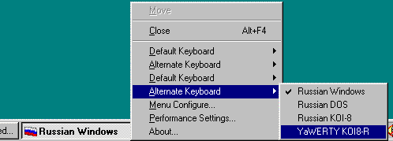
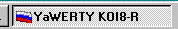

Page index / PC-MacRussian
Step Ten
Step Ten
Press the Scroll Lock key on your keyboard and the orginal box 'US English' will be switched to the Russian keyboard layout 'Russian Windows'.
Click on the box 'Russian Windows' with the right mouse button and choose 'Alternate Keyboard' and then select 'YaWERTY KOI8-R'.

Then the box 'Russian Windows' will be switched to the 'YaWERTY KOI8-R' like this.

Now you can type Russian using your keyboard!
Go to the next step.
Previous Step | Next Step